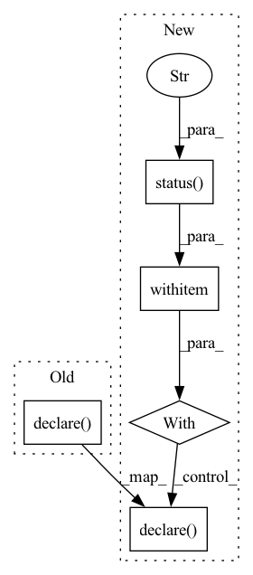

Pattern ID :12756

Before Change
def set_active_stack(stack_name: str) -> None:
Sets a stack active.
Repository().activate_stack(stack_name)
cli_utils.declare(f"Active stack: {stack_name}")
@stack.command("get")
def get_active_stack() -> None:
After Change
@click.argument("stack_name", type=str)
def set_active_stack(stack_name: str) -> None:
Sets a stack active.
with console.status(f"Setting the active stack to `{stack_name}`..."):
Repository().activate_stack(stack_name)
cli_utils.declare(f"Active stack: {stack_name}")
@stack.command("get")
def get_active_stack() -> None:
In pattern: SUPERPATTERN
Frequency: 4
Non-data size: 5
Instances
Fragment ID: 43231671
Project Name: maiot-io/zenml
Commit Name: ea2f35c0786a6bc5f53b660b20c6f53fb45fa6f5
Time: 2022-02-11
Author: 90610017+alex-zenml@users.noreply.github.com
File Name: src/zenml/cli/stack.py
M Class Name: AnonimousClass
N Class Name: AnonimousClass
M Method Name: set_active_stack(1)
N Method Name: set_active_stack(1)
M Parent Class:
N Parent Class:
M File Name: src/zenml/cli/stack.py
N File Name: src/zenml/cli/stack.py
M Start Line: 180
M End Line: 181
N Start Line: 181
N End Line: 185
'>
Before Change
@stack.command("get")
def get_active_stack() -> None:
Gets the active stack.
cli_utils.declare(f"Active stack: {Repository().active_stack_name}")
@stack.command("up")
@cli_utils.activate_integrations
After Change
@stack.command("get")
def get_active_stack() -> None:
Gets the active stack.
with console.status("Getting the active stack..."):
cli_utils.declare(f"Active stack: {Repository().active_stack_name}")
@stack.command("up")
@cli_utils.activate_integrations
'>
Fragment ID: 43231670
Project Name: maiot-io/zenml
Commit Name: ea2f35c0786a6bc5f53b660b20c6f53fb45fa6f5
Time: 2022-02-11
Author: 90610017+alex-zenml@users.noreply.github.com
File Name: src/zenml/cli/stack.py
M Class Name: AnonimousClass
N Class Name: AnonimousClass
M Method Name: get_active_stack(0)
N Method Name: get_active_stack(0)
M Parent Class:
N Parent Class:
M File Name: src/zenml/cli/stack.py
N File Name: src/zenml/cli/stack.py
M Start Line: 187
M End Line: 187
N Start Line: 189
N End Line: 192
'>
Before Change
stack_ = Stack.from_components(name=stack_name, components=stack_components)
repo.register_stack(stack_)
cli_utils.declare(f"Stack `{stack_name}` successfully registered!")
@stack.command("list")
def list_stacks() -> None:
After Change
container_registry_name: Optional[str] = None,
) -> None:
Register a stack.
with console.status(f"Registering stack `{stack_name}`..."):
repo = Repository()
stack_components = {
StackComponentType.METADATA_STORE: repo.get_stack_component(
StackComponentType.METADATA_STORE, name=metadata_store_name
),
StackComponentType.ARTIFACT_STORE: repo.get_stack_component(
StackComponentType.ARTIFACT_STORE, name=artifact_store_name
),
StackComponentType.ORCHESTRATOR: repo.get_stack_component(
StackComponentType.ORCHESTRATOR, name=orchestrator_name
),
}
if container_registry_name:
stack_components[
StackComponentType.CONTAINER_REGISTRY
] = repo.get_stack_component(
StackComponentType.CONTAINER_REGISTRY,
name=container_registry_name,
)
stack_ = Stack.from_components(
name=stack_name, components=stack_components
)
repo.register_stack(stack_)
cli_utils.declare(f"Stack `{stack_name}` successfully registered!")
@stack.command("list")
def list_stacks() -> None:
'>
Fragment ID: 43231669
Project Name: maiot-io/zenml
Commit Name: ea2f35c0786a6bc5f53b660b20c6f53fb45fa6f5
Time: 2022-02-11
Author: 90610017+alex-zenml@users.noreply.github.com
File Name: src/zenml/cli/stack.py
M Class Name: AnonimousClass
N Class Name: AnonimousClass
M Method Name: register_stack(5)
N Method Name: register_stack(5)
M Parent Class:
N Parent Class:
M File Name: src/zenml/cli/stack.py
N File Name: src/zenml/cli/stack.py
M Start Line: 77
M End Line: 100
N Start Line: 78
N End Line: 107
'>
Before Change
def delete_stack(stack_name: str) -> None:
Delete a stack.
Repository().deregister_stack(stack_name)
cli_utils.declare(f"Deleted stack {stack_name}.")
@stack.command("set")
@click.argument("stack_name", type=str)
After Change
@click.argument("stack_name", type=str)
def delete_stack(stack_name: str) -> None:
Delete a stack.
with console.status(f"Deleting stack `{stack_name}`...\n"):
Repository().deregister_stack(stack_name)
cli_utils.declare(f"Deleted stack {stack_name}.")
@stack.command("set")
@click.argument("stack_name", type=str)
'>
Fragment ID: 43231672
Project Name: maiot-io/zenml
Commit Name: ea2f35c0786a6bc5f53b660b20c6f53fb45fa6f5
Time: 2022-02-11
Author: 90610017+alex-zenml@users.noreply.github.com
File Name: src/zenml/cli/stack.py
M Class Name: AnonimousClass
N Class Name: AnonimousClass
M Method Name: delete_stack(1)
N Method Name: delete_stack(1)
M Parent Class:
N Parent Class:
M File Name: src/zenml/cli/stack.py
N File Name: src/zenml/cli/stack.py
M Start Line: 172
M End Line: 173
N Start Line: 172
N End Line: 176